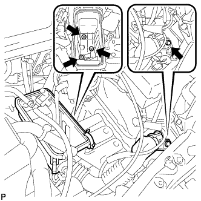
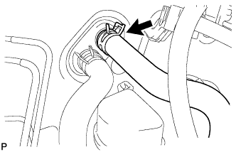
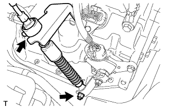
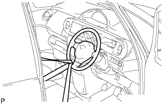
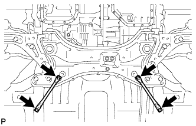
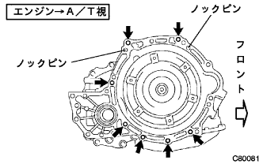

Remove engine rear oil seal (1NZ-FE (4WD)) |
| 1. Fuel leakage prevention work |
 |
Cut the connector for fuel pump ASSY.
Engine start
Start the engine.
After the engine stops naturally, turn off the ignition switch.
Crank the engine again and confirm that it will not start.
Remove the fuel tank cap and remove the pressure in the fuel tank.
Remove the battery's minihana stormy.
referenceAttach the fuel pump Assessed connector.
| 2. Remove the front tire |
Remove the hub nut and remove the front tire.
| 3. Engine undercover RH removal |
Remove two bolts and two screws.
Remove the nut and remove the engine undercover RH.
| 4. Engine undercover LH removal |
Remove two bolts and two screws and remove the engine and cover LH.
| 5. Cooling solution (Toyota genuine super LLC) extract |
Open the radiator cap.
Loosen the radiator dollen cock plug and extract the cooling solution.
| 6. Pull out the automatic trance axleflood |
Remove the drain plug and gasket and extract the fluid.
Tighten the drain plug via a new gasket.
| 7. Remove the battery |
Remove the two nuts and remove the battery clamp and the accelerator cable stay.
Take off the battery.
Take off the battery tray.
| 8. Air cleaner ASSY removal |
 |
Cut the VSV connector and two hoses.
Separate the airflow meter and the wire harness clamp.
Cut the ventilation hose No. 2.
Remove the air cleaner cap w/air cleaner hose No.1.
Remove the air cleaner filter element.
|  |
Remove the four bolts and remove the air cleaner case W/Air Cleanine Let No.1 and No.2.
| 9. Radiator Inlet House Remove |
 |
Remove the clamp and remove the radiator inlet hot.
| 10. Radiator outlet hole removal |
|  |
Remove the clamp and remove the radiator outlet hot.
| 11. Oil cool linelet hole cut off |
Remove the clamp and disconnect the oil cool line lettuce hose.
| 12. Oil Cooler Outlet House Cut |
Remove the clamp and separate the oil cooler outlet hot.
| 13. Radiator Grill W/Radiator Support Seal UPR |
Use the clip resover to remove the six clips.
Paste the protective tape around and on the radiator support seal UPR and the radiator support seal UPR.
Use a flathead screwdriver with a protective tape to remove the support seal behind the vehicle with the three claws in the figure.

Lift the radiator support seal UPR and remove the radiator grilled claws from the gaps.

Check that the claws are off and remove the radiator grill.
Remove the radiator support seal UPR.
| 14. Food rock ASSY removes |
 |
Remove the three bolts and remove the bonnet lock ASSY.
Cut the bonnet lock control cable ASSY from the bonnet lock assembly.
| 15. Food rock support SUB-ASSY |
 |
Remove the four bolts and clips and remove the bonnet (hood) rock support.
| 16. Remove the food rock support brace |
 |
Separate the clamp of the bonnet lock control cable.
Remove the four bolts and remove the bonnet (food) rock support brace.
| 17. Radiator support SUB-ASSY UPR is removed |
 |
Separate the horn ASSY connector and clamp.
Remove the four bolts and clips and remove the radiator support UPR.
| 18. Radiator Asset |
Cooling fan motor connector and wire harness clamp are separated and radiator ASSY W/Fanshuld is removed from the vehicle.
| 19. Cylinder head cover No.2 |
 |
Remove the four nuts and remove the cylinder head cover No.2.
| 20. Accelerator control cable ASSY disconnection |
Separate the accelerator control cable ASSY from the throttle body body ASSY.
| 21. Column shift transmission control cable ASSY disconnection |
|  |
Remove the nut and separate the control cable from the control shaft lever.
Remove the clip and separate the control cable from the control bracket.
Separate the control cable from the control cable support.
| 22. Union toe check valve hose is removed |
Cut the Union Tsu check valve hose from the booster vacuum tube.
| 23. Hita Water Hose Inlet A Cut off |
Cut the Hita Water Inlet Hose A from the radiator heater unit.
| 24. Hita Water Hose Outlet A Cuts |
Cut the Hita Water Outlet Hose A from the radiator heater unit.
| 25. Fuel tube SUB-ASSY disconnection |
 |
Remove the fuel pipe clamp No. 1.
 |
Cut the fuel tube connector and fuel pipe.
| 26. Fan & alternator V belt removed |
 |
Loosen the adjustment bolt A and the fixing bolt B.
Remove the V belt by loosening the tension of the V belt.
| 27. Cooler compressor w/magnet clutch ASSY |
Cut the connector.
Remove the four bolts and separate the compressor ASSY.
| 28. Wire harness cut off |
 |
Take off the club box.
Cut the engine wire from the engine control computer and junction block.
Pull out the engine wire into the engine room.
Remove the connector and clamp from the engine room junction block and separate the wire harness.
 |
Remove the bolt and disconnect the engine room wire harness earth wire.
Cut off all wire harness and connector to make sure that the wire harness is not connected between the body and the engine.
| 29. Steering column hole cover plate is removed |
 |
Remove the two clips and remove the hole cover plate.
| 30. Steering sliding York SUB-ASSY disconnection |
|  |
Attach the seat belt so that the steering wheel does not rotate.
 |
Loosen the bolts on the column side (A) of the sliding yoke.
Remove the bolt on the gear side (B) of the sliding yoke.
Mark the sliding yoke and the interimide shaft, and separate the sliding yoke.
 |
Remove the clip A and separate the hole cover from the body.
| 31. Exhaust pipe ASSY CTR removed |
Remove two bolts and two exhaust pipe support and remove the exhaust center pipe ASSY.
| 32. Remove the propeller shaft ASSY |
 |
Mark the propeller shaft asser and propelline thimidiite shaft ASSY.
Remove four bolts, washer and nuts each, and separate the propeller shaft ASSY from the interimide shaft ASSY.
 |
After removing the propeller shaft ASSY, insert the SST into the extension housing.
| 33. Front axle shaft nut LH removed |
 |
Set the SST according to the grooves of the front drive shaft asser LH, and use a hammer to solve the bark.
Use a socket wrench (30mm) to remove the front axle hub nut LH.
| 34. The front axle shaft nut RH is removed |
| 35. Speed sensor FR LH separation |
 |
Remove the speed sensor FR LH clip and the bolt of the flexible hose and separate the front shock absorber ASSY LH.
 |
Remove the bolt and separate the speed sensor FR LH from the steering knuckle.
| 36. Speed sensor FR RH separation |
| 37. Stabilizer bar cut separation |
| 38. Front suspension Lower arm No.1 LH disconnection |
Remove the cotter pin and castle nut.
 |
Use SST to separate the ball joint part of the Rewer Arm No.1 from the steering knuckle.
| 39. Front suspension Lower arm No.1 RH disconnection |
| 40. Tie rod end sub-assy LH separation |
 |
Remove the cotter pin and castle nut.
Use SST to separate the tie rod end LH from the steering knuckle.
| 41. Tie rod end sub-assy RH separation |
| 42. Front axle ASSY LH separation |
 |
Remove the two bolts and two nuts and separate the front axle Ass, from the front shock absorber ASSY LH.
Use a plastic hammer to lightly hit the tip of the front drive shaft ASSY LH and remove the front drive shaft ASSY LH and the front axle ASSY LH.
 |
Press the front axle ASSY LH to the outside of the vehicle and pull out the front drive shaft ASSY LH from the front axle ASSY LH.
| 43. Front axle assigned separation |
| 44. Remove the front drive shaft ASSY LH |
 |
Remove the SST to the position of the figure on the front drive shaft ASSY LH.
| 45. Front drive shaft ASSY RH removed |
 |
Press the bearing bracket hole napping ring with a square axis flather and remove it from the bearing bracket.
Remove the No. 1 drive shaft bearing bracket bolt.
 |
Remove the front drive shaft ASSY RH from the drive shaft bearing bracket.
| 46. Engine ASSY W/Transxle removed |
 |
Set the engine lifter.
 |
Remove 5 bolts and nuts and remove the engine mounting insulator RH.
 |
Remove the two bolts and separate the engine mounting insulator LH.
|  |
Remove the four bolts and remove the front suspension Menbarin Housing LH and RH.
 |
Remove the four bolts and remove the engine Assing W/Transxle and front suspension cross member from the vehicle.
| 47. Bane pump ASSY disconnection |
 |
Remove the vane pump V belt.
Loosen the fixing bolt A and bolt B for adjustment.
Remove the V belt by loosening the tension of the V belt.
Cut the connector and clamp.
 |
Remove the two bolts and cut the vane pump ASSY from the engine.
| 48. Power steering link asset removal |
 |
Remove the two bolts and remove the power steering link Assy W/Vane pump.
| 49. Front suspension cross member SUB-ASSY |
Remove the bolt and connector and remove the radio setting capacitors and oxygienesensen wiring brackets.
 |
Attach the engine hanger (12281-21010) with a bolt (91642-81025) to the point in the figure.
Use engine ring devices and chain blocks to hold the engine ASSY W/Transxle and front suspension cross member.
Remove the through bolt of the engine mounting insulator RR and engine mounting bracket RR and remove the front suspension cross member.
| 50. Exhaust pipe ASSY FR removed |
Remove two bolts and two springs and remove the exhaust pipe ASSY FR.
| 51. Starter ASSY removes |
Push up from the bottom to remove the claws, and remove the flywheel housing side cover.
 |
Turn over the terminal cap.
Remove the nut and remove the 30 terminals.
Remove the two bolts and remove the starter ass.
Cut the connector.
| 52. Remove the wire harness |
 |
Remove the bolt and remove the air cleaner bracket.
Remove the bolt and remove the wire harness clamp from the automatic trance axle.
| 53. Cut the connector |
 |
Separate the speedometer sensor connector, transmission wire catnector, neutral start switch connector and Revolution Sensor Conector.
| 54. Step -out engine mounting bracket RR |
 |
Remove the three bolts and remove the engine mounting bracket RR.
| 55. Maniholdo support bracket removal |
 |
Remove the three bolts and remove the manifold support bracket.
| 56. Transfastifuna plate CTR removed |
 |
Remove the five bolts and remove the transfasifna plate CTR.
| 57. Transfastifuna plate RH is removed |
 |
Remove the five bolts and remove the transfasifna plate RH.
| 58. Transfer ASSY removed |
Remove 6 nuts.
 |
Remove the transfa ASSY from the Transxle ASSY.
| 59. Remove the automatic transformer axle ASSY |
 |
Fix the crankshaft dampa using SST.
 |
Remove six torque converter set bolts.
|  |
Remove the seven bolts and remove the automatic transxle.
| 60. Drive plate & ring gear SUB-ASSY |
 |
Use SST to fix the crankshaft Dampa and remove 6 drive plate & ring gear mounting bolts.
Remove the drive plate & ring gear.
| 61. Remove the engine rear oil seal |
 |
Use a cutter knife to cut the lip of the oil seal.
Use a flathead screwdriver with a protective tape to remove the oil seal.